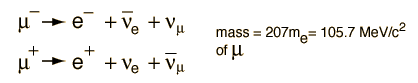

Atmospheric Muons
Most muons observed at the surface of the Earth are produced by primary cosmic rays in the upper atmosphere. They are the most numerous energetic particles arriving at sea level, with a flux of about 1 muon per square centimeter per second. This can be compared to a solar neutrino flux of about 5 x 106 per square centimeter per second.

The mean energy of muons reaching sea level is about 4 GeV. Muons, being charged particles, interact with matter by ionizing it. The loss of energy by muons passing throught he atmosphere is proportional to the amout of matter they traverse. The medium is usually characterized by its density (g/cm3) times the distance traveled in centimeters. This is sometimes called the "interaction length" and is measured in g/cm2. The energy loss for muons is about 2 MeV per g/cm2. The interaction depth of the atmosphere is about 1000 cm2, so muons lose about 2 GeV in passing through the atmosphere. With the sea level mean energy of muons detected at the surface = 4 GeV, this suggests an original muon energy in the neighborhood of 6 GeV.
Most muons are thought to be created at altitudes of about 15000 meters and travel with other particles to the Earth in conical showers within about 1° of the trajectory of the primary particle which creates them. Measurement of muon flux at different altitudes is a useful example of relativistic time dilation. With an energy of 4 GeV, the time dilation factor is g = 38.8 .
|